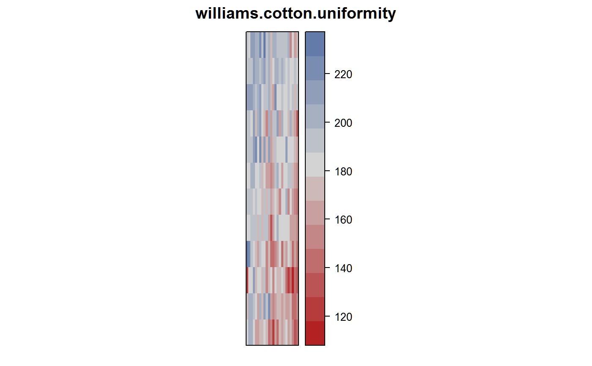
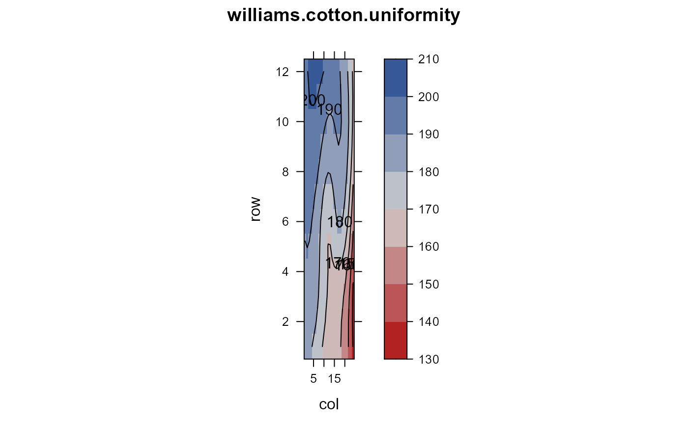

williams.cotton.uniformity.RdUniformity trial of cotton at Narrabri, New South Wales, 1984.
A data frame with 288 observations on the following 3 variables.
rowrow
colcolumn
yieldlint yield, kg/ha divided by 10
Cotton uniformity trial grown at Narrabri, New South Wales, 1984-1985. Plots were 12m long, 1m apart, 12 rows by 24 columns, with an irrigation furrow between columns.
Field width: 24 plots * 1 m = 24 m
Field length: 12 plots * 12 m = 144 m
Williams, ER and Luckett, DJ. 1988. The use of uniformity data in the design and analysis of cotton and barley variety trials. Australian Journal of Agricultural Research, 39, 339-350. https://doi.org/10.1071/AR9880339
# \dontrun{ library(agridat) data(williams.cotton.uniformity) dat <- williams.cotton.uniformity libs(desplot) desplot(dat, yield ~ col*row, aspect=144/24, # true aspect main="williams.cotton.uniformity")# Smoothed contour/persp plot like Williams 1988 Fig 1a, 2a dat$fit <- fitted(loess(yield~col*row, dat, span=.5)) libs("lattice") contourplot(fit~col*row, data=dat, aspect=144/24, region=TRUE, cuts=6, col.regions=RedGrayBlue, main="williams.cotton.uniformity")# wireframe(fit~col*row, data=dat, zlim=c(100, 250), # main="williams.cotton.uniformity") # Williams table 1 anova(aov(yield ~ factor(row) + factor(col), dat))#> Analysis of Variance Table #> #> Response: yield #> Df Sum Sq Mean Sq F value Pr(>F) #> factor(row) 11 30707 2791.58 14.450 < 2.2e-16 *** #> factor(col) 23 44762 1946.16 10.074 < 2.2e-16 *** #> Residuals 253 48875 193.18 #> --- #> Signif. codes: 0 '***' 0.001 '**' 0.01 '*' 0.05 '.' 0.1 ' ' 1# }